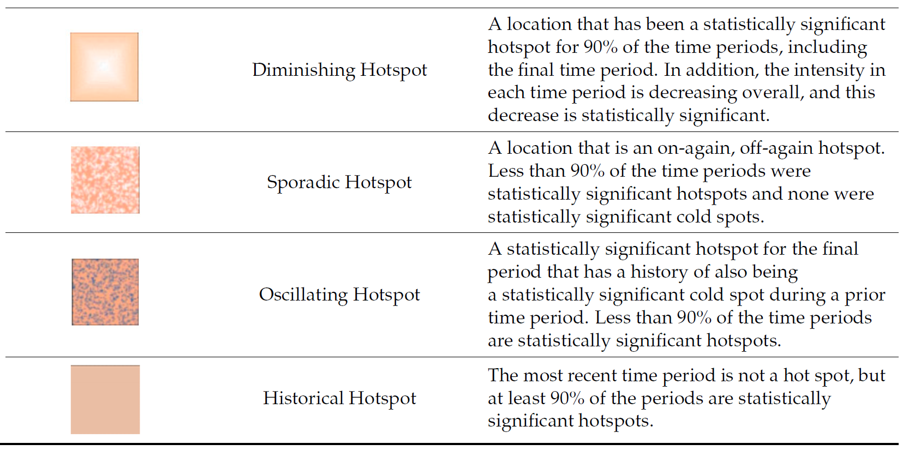

pacman::p_load(sf, sfdep, tmap, plotly, tidyverse, Kendall)In-Class Exercise 6
In this exercise, we will explore Emerging Hot Spot Analysis (EHSA), a spatio-temporal analysis method for identifying and categorizing hot and cold spot trends over time in a spatial dataset.
1 Exercise Reference
ISSS626 Geospatial Analytics and Applications – In-class Exercise 6: Emerging Hot Spot Analysis
2 Overview
In this exercise, we will explore Emerging Hot Spot Analysis (EHSA), a spatio-temporal analysis method for identifying and categorizing hot and cold spot trends over time in a spatial dataset.
3 Learning Outcome
- Load and install R packages for spatio-temporal analysis.
- Create a space-time cube using geospatial and temporal data.
- Calculate Gi* statistics and use the Mann-Kendall test to detect monotonic trends.
- Perform Emerging Hot Spot Analysis using spatio-temporal data.
- Visualize the results of EHSA with spatial and temporal trends.
4 Import the R Packages
The following R packages will be used in this exercise:
| Package | Purpose | Use Case in Exercise |
|---|---|---|
| sf | Handles spatial data; imports, manages, and processes vector-based geospatial data. | Importing and managing geospatial data, such as Hunan’s county boundary shapefile. |
| sfdep | Provides functions for spatial autocorrelation and temporal analysis, including Emerging Hot Spot Analysis (EHSA). | Performing spatio-temporal analysis using Gi* statistics and Mann-Kendall test. |
| plotly | Creates interactive plots in R. | Visualizing spatio-temporal trends with interactive plots. |
| tidyverse | A collection of R packages for data science tasks like data manipulation, visualization, and modeling. | Wrangling aspatial data and joining it with geospatial datasets. |
| Kendall | Provides functions for performing the Mann-Kendall test for detecting trends in time series data. | Performing the Mann-Kendall test to assess the trends in Gi* statistics over time. |
To install and load these packages, use the following code:
5 The Data
The following datasets will be used in this exercise:
| Data Set | Description | Format |
|---|---|---|
| Hunan | A geospatial dataset containing Hunan’s county boundaries. | ESRI Shapefile |
| Hunan_GDPPC | A CSV file containing GDP per capita data of Hunan from 2000 to 2012. | CSV |
Similar to hands-on exercises, import the datasets accordingly:
hunan <- st_read(dsn = "data/geospatial",
layer = "Hunan")Reading layer `Hunan' from data source
`/Users/walter/code/isss626/isss626-gaa/In-class_Ex/In-class_Ex06/data/geospatial'
using driver `ESRI Shapefile'
Simple feature collection with 88 features and 7 fields
Geometry type: POLYGON
Dimension: XY
Bounding box: xmin: 108.7831 ymin: 24.6342 xmax: 114.2544 ymax: 30.12812
Geodetic CRS: WGS 84GDPPC <- read_csv("data/aspatial/Hunan_GDPPC.csv")6 Creating a Time Series Cube
Note
Relevant Reading Material: spacetime and spacetime cubes • sfdep
A space-time cube represents spatio-temporal data, combining location and time to study trends, often used for identifying patterns like hot spots. It is popular for its ability to handle large datasets, and it is available in ArcGIS.
In R, it can be implemented for free using libraries like sfdep. The implementation in R follows tidyverse principles.
Constraints: - Spatial locations (geometry) must be static. - Time and data values can be dynamic.
Good for:
- Tracking consistent locations over time (e.g., temperature changes in cities where admin boundaries are static).
Not ideal for:
- Events where boundaries shift, like forest fires, where the area or size of the fire evolves.
To create a spatio-temporal cube:
GDPPC_st <- spacetime(GDPPC, hunan,
.loc_col = "County",
.time_col = "Year")And it is always good to verify that we created a valid spacetime_cube object.
is_spacetime_cube(GDPPC_st)[1] TRUE7 Computing Gi*
Next, we will compute the local Gi* statistics.
7.1 Deriving the spatial weights
To identify neighbors and to derive an inverse distance weights:
Tip
-
activate("geometry"): Activates the geometry context for spatial operations. -
mutate(): Adds two columns:-
nb: Neighbors, including the observation itself (include_self), using spatial contiguity (st_contiguity). -
wt: Weights, calculated with inverse distance (st_inverse_distance).
-
-
set_nbs()andset_wts(): Copies neighbors and weights to all time-slices. Ensure row order consistency after using these functions.
GDPPC_nb <- GDPPC_st %>%
activate("geometry") %>%
mutate(nb = include_self(
st_contiguity(geometry)),
wt = st_inverse_distance(nb,
geometry,
scale = 1,
alpha = 1),
.before = 1) %>%
set_nbs("nb") %>%
set_wts("wt")Note that this dataset now has neighbors and weights for each time-slice.
To calculate the local Gi* statistic for each location:
- Group by Year: This ensures we calculate Gi* separately for each year in the dataset.
-
Use
local_gstar_perm(): This function computes the local Gi* statistic using the GDPPC values, neighbors (nb), and weights (wt). -
Unnest the Gi* results: The
gi_starcolumn is nested, so we useunnest()to extract the results into a clean format.
gi_stars <- GDPPC_nb %>%
group_by(Year) %>%
mutate(gi_star = local_gstar_perm(
GDPPC, nb, wt)) %>%
tidyr::unnest(gi_star)8 Mann-Kendall Test
Important
A monotonic series or function is one that only increases (or decreases) and never changes direction. So long as the function either stays flat or continues to increase, it is monotonic.
\(H_0\): No monotonic trend
\(H_1\): Monotonic trend is present
Interpretation
- Reject the null-hypothesis null if the p-value is smaller than the alpha value (i.e. 1-confident level)
- Tau ranges between -1 and 1 where:
- -1 is a perfectly decreasing series, and
- 1 is a perfectly increasing series.
8.1 Mann-Kendall Test on Gi
To evaluate trends in Gi* measures over time using the Mann-Kendall test for a specific location, like Changsha county:
Filter data for Changsha:
cbg <- gi_stars %>%
ungroup() %>%
filter(County == "Changsha") %>%
select(County, Year, gi_star)Plot the Gi* values over time using ggplot2:
p <- ggplot(data = cbg,
aes(x = Year,
y = gi_star)) +
geom_line() +
theme_light()
ggplotly(p)To print Mann-Kendall test report:
cbg %>%
summarise(mk = list(
unclass(
Kendall::MannKendall(gi_star)))) %>%
tidyr::unnest_wider(mk)# A tibble: 1 × 5
tau sl S D varS
<dbl> <dbl> <dbl> <dbl> <dbl>
1 0.485 0.00742 66 136. 589.
Note
Observations:
In the above result, sl is the p-value. With reference to the results, we will reject the null hypothesis and infer that a slight upward trend.
8.2 Mann-Kendall test data.frame
To replicate this for each location by using group_by() of dplyr package:
ehsa <- gi_stars %>%
group_by(County) %>%
summarise(mk = list(
unclass(
Kendall::MannKendall(gi_star)))) %>%
tidyr::unnest_wider(mk)
head(ehsa)# A tibble: 6 × 6
County tau sl S D varS
<chr> <dbl> <dbl> <dbl> <dbl> <dbl>
1 Anhua 0.191 0.303 26 136. 589.
2 Anren -0.294 0.108 -40 136. 589.
3 Anxiang 0 1 0 136. 589.
4 Baojing -0.691 0.000128 -94 136. 589.
5 Chaling -0.0882 0.650 -12 136. 589.
6 Changning -0.750 0.0000318 -102 136. 589.And sort to show significant emerging hot/cold spots:
# A tibble: 6 × 6
County tau sl S D varS
<chr> <dbl> <dbl> <dbl> <dbl> <dbl>
1 Shuangfeng 0.868 0.00000143 118 136. 589.
2 Xiangtan 0.868 0.00000143 118 136. 589.
3 Xiangxiang 0.868 0.00000143 118 136. 589.
4 Chengbu -0.824 0.00000482 -112 136. 589.
5 Dongan -0.824 0.00000482 -112 136. 589.
6 Wugang -0.809 0.00000712 -110 136. 589.9 Performing Emerging Hotspot Analysis
To perform Emerging Hotspot Analysis (EHSA), we can use the emerging_hotspot_analysis() function from the sfdep package. This function analyzes spatio-temporal trends by detecting areas that are hotspots over time. It takes the following parameters: - x: The spacetime object (e.g., GDPPC_st). - .var: The variable of interest (e.g., "GDPPC"). - k: Number of time lags (default is 1). - nsim: Number of simulations to run (e.g., 99).
set.seed(1234)
ehsa <- emerging_hotspot_analysis(
x = GDPPC_st,
.var = "GDPPC",
k = 1,
nsim = 99
)ehsa# A tibble: 88 × 4
location tau p_value classification
<chr> <dbl> <dbl> <chr>
1 Anxiang 0.221 0.232 sporadic coldspot
2 Hanshou 0.147 0.434 sporadic hotspot
3 Jinshi 0.441 0.0151 oscilating hotspot
4 Li -0.824 0.00000482 sporadic coldspot
5 Linli 0.118 0.537 oscilating hotspot
6 Shimen -0.471 0.00946 oscilating coldspot
7 Liuyang 0.868 0.00000143 sporadic hotspot
8 Ningxiang -0.559 0.00201 sporadic coldspot
9 Wangcheng -0.162 0.387 sporadic coldspot
10 Anren 0.456 0.0120 sporadic coldspot
# ℹ 78 more rows9.1 Visualising the Distribution of EHSA classes
To visualize the EHSA classification distribution using a bar chart with ggplot2:
ggplot(data = ehsa, aes(x = classification)) +
geom_bar()
The bar char shows that sporadic cold spots class has the high numbers of county.
Important
Note that in the above plot, we did not filter for statistically significant EHSA results, which may be misleading for our analysis
To filter for statistically significant EHSA results, we should focus on locations where the p_value is below a threshold (< 0.05).
ehsa_significant <- ehsa %>%
filter(p_value < 0.05)
ggplot(data = ehsa_significant, aes(x = classification)) +
geom_bar()This will display a bar chart showing the distribution of EHSA classes for locations with statistically significant results. Note that the distribution is similar, but the magnitude is smaller after filtering.
9.2 Visualising EHSA
To visualise the geographic distribution EHSA classes, we need to join both hunan and ehsa together before creating the plot. Note that in this case, we have filtered for statistically significant results.
hunan_ehsa <- hunan %>%
left_join(ehsa,
by = join_by(County == location))
ehsa_sig <- hunan_ehsa %>%
filter(p_value < 0.05)
tmap_mode("plot")
tm_shape(hunan_ehsa) +
tm_polygons() +
tm_borders(alpha = 0.5) +
tm_shape(ehsa_sig) +
tm_fill("classification") +
tm_borders(alpha = 0.4)9.3 Interpretation of EHSA classes
Additional Notes

Note
Final Notes:
EHSA and the Mann-Kendall test complement each other by analyzing spatio-temporal data in different ways.
The Mann-Kendall test checks for monotonic trends without randomization or permutation, calculating a tau value that indicates trend strength.
On the other hand, EHSA includes simulations, providing more robust spatial analysis with its own tau and p-values, which may differ from those in the Mann-Kendall test. And we will have use the EHSA results to do our final hotspot classification.
By performing both, we gain deeper insights into spatio-temporal trends, accounting for both trend significance and spatial randomness.